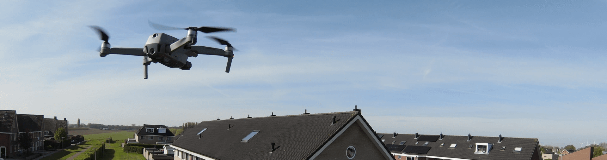
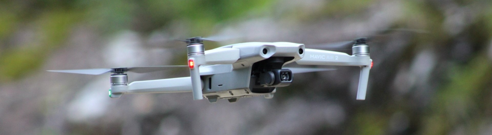

Opzoek naar eigen luchtbeelden?
Wilt u luchtbeelden voor op uw website of voor marketing? Dat kan bij TakeOffTiel!
Druk op de login knop op een afspraak te maken!

Wat heeft TakeOffTiel te bieden?
TakeOffTiel is gericht op het maken van luchtfoto's en luchtvideo's. Deze luchtbeelden zullen gemaakt worden door een van de drones. U kunt uw voorkeuren over de positie van de drone zelf aangeven, zolang de drone regels van de Europese Unie dit toelaten. Door een live video-verbinding met de drone, kunt u meekijken hoe de beelden worden en mogelijk aanpassingen aanbrengen. De beelden zal ik dan thuis doorsturen in de originele kwaliteit.